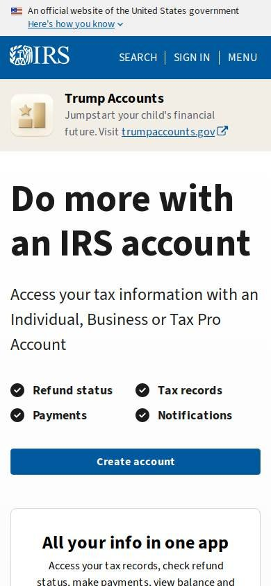
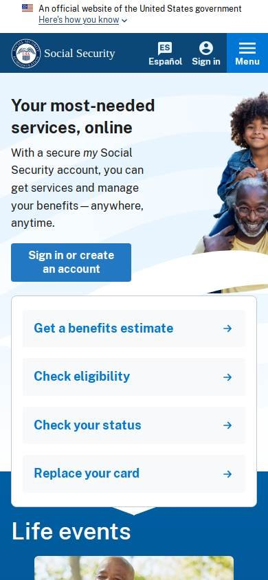
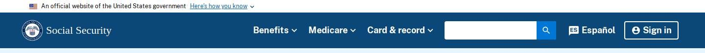

Institucional o de gobierno
Los seleccionados
Los tres sitios más visitados de Estados Unidos, según estadísticas de tráfico.
En resumen: lo que hacen los líderes
La pantalla de inicio de cada uno


Estilo visual
Colores, imágenes, tipografía y cuánta información muestran.
Tu estilo visual debería…
- Azul y blanco, tipografía grande y legible, botones rectos azules.
- Una foto o ilustración de personas para humanizar el servicio.
Lo que tienen en común: Azul institucional con blanco, tipografía grande y legible, y una imagen humana (foto o ilustración).
La paleta de cada uno
Medida sobre la primera pantalla. Los colores de marca salen del header; el resto muestra cuánto espacio ocupa cada color.
Así lo resuelve cada uno
Ficha comparativa
| Aspecto | USA.gov | IRS | Social Security |
|---|---|---|---|
| Paleta | Acotada: azul marino + rojo + blanco | Acotada: azul + blanco | Acotada: azul + blanco |
| Imágenes | Foto de bandera | Ilustración de persona | Foto de personas reales |
| Tipografía | Sin serifa, legible | Sin serifa, título muy grande | Sin serifa, título muy grande |
| DensidadIgual en todos | Media | Media | Media |
| Botones | Azul | Azul oscuro, recto | Azul, recto |
Barra superior
La franja fina de arriba de todo.
Tu barra superior debería…
- Arriba de todo, una franja fina que aclare que es un sitio oficial, con el símbolo nacional.
Lo que tienen en común: Los tres usan exactamente la misma franja oficial arriba de todo: gris claro, con la bandera y el aviso de que es un sitio del gobierno.
Así lo resuelve cada uno


Ficha comparativa
| Aspecto | USA.gov | IRS | Social Security |
|---|---|---|---|
| ExisteIgual en todos | Sí | Sí | Sí |
| ContenidoIgual en todos | «Sitio oficial del gobierno de EE. UU.» | «Sitio oficial del gobierno de EE. UU.» | «Sitio oficial del gobierno de EE. UU.» |
| EstiloIgual en todos | Gris claro, letra chica, con bandera | Gris claro, letra chica, con bandera | Gris claro, letra chica, con bandera |
Header
La franja de arriba con el logo y los accesos.
Tu header debería…
- Sello u logo a la izquierda, en azul oscuro.
- A la derecha: idioma, buscador e «Ingresar».
Lo que tienen en común: Logo o sello a la izquierda y, a la derecha, idioma, buscador y acceso a la cuenta. Azul como color institucional.
Así lo resuelve cada uno

Ficha comparativa
| Aspecto | USA.gov | IRS | Social Security |
|---|---|---|---|
| Fondo | Blanco | Azul | Azul oscuro |
| Logo | Sello circular, a la izquierda | Logo con águila, a la izquierda | Sello + nombre, a la izquierda |
| A la derecha | Español, teléfono y buscador | Ayuda, idioma, «Sign in» | Español, buscador, «Sign in» |
Menú y categorías
Cómo se organizan las secciones.
Tu menú y categorías debería…
- Entre 5 y 7 secciones con verbos o nombres de servicio cortos («Pagar», «Reclamos», «Formularios»).
Lo que tienen en común: Pocas secciones, con nombres cortos que dicen qué podés hacer.
Así lo resuelve cada uno


Ficha comparativa
| Aspecto | USA.gov | IRS | Social Security |
|---|---|---|---|
| Formato | Fila de temas en el header | Fila de tareas sobre franja azul | Pocas secciones con desplegables |
| Cómo nombra las secciones | Por tema (beneficios, viajes) | Por acción (File, Pay, Refunds) | Por servicio (Benefits, Medicare) |
Primera pantalla
Lo primero que se ve debajo del header.
Tu primera pantalla debería…
- Título grande que diga qué podés resolver online.
- Botón azul con la acción completa («Ingresá o creá tu cuenta»).
- Debajo, 4 tarjetas con borde y las tareas más buscadas.
Lo que tienen en común: Título grande sobre lo que podés resolver online, una imagen de personas reales o ilustración, un botón azul para crear cuenta y tarjetas con las tareas más buscadas.
Así lo resuelve cada uno
Ficha comparativa
| Aspecto | USA.gov | IRS | Social Security |
|---|---|---|---|
| Formato | Foto + caja de texto + «How do I…» | Título grande + ilustración + lista de tareas | Título grande + foto de personas + botón |
| Botón principal | No | «Create account» | «Sign in or create an account» |
| Debajo | Accesos «¿Cómo hago…?» | Info de la app | 4 tarjetas de tareas con borde |